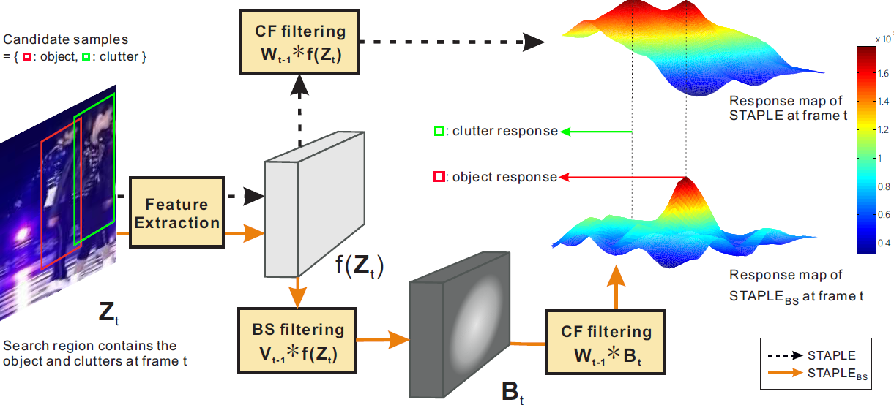
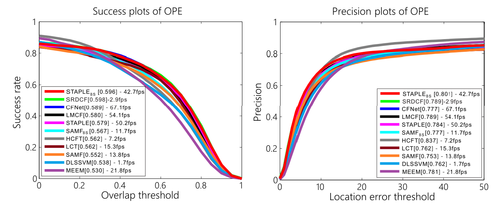

Background-Suppressed Correlation Filters for Visual Tracking
1Zhihao Chen § 2Qing Guo § 1Liang Wan* 2Wei Feng
1School of Computer Software, Tianjin University 2School of Computer Science and Technology, Tianjin University
§: equal contribution

Comparing a CF tracker, i.e. STAPLE, with its BSCF tracker, i.e. STAPLE_BS which is equipped with our background suppression filtering. At the frame t, there are two similar objects in the search region. The one with red bounding box is the interested target. Another is the clutter. Staple denoted as the dashed line generates a less discriminative response map having double high peaks and gets the highest value on the clutter. However, with the background suppression filtering, STAPLE_BS gets much more discriminative response map only having one high peak on target position.
Abstract
Correlation filters~(CF) visual object tracking is a powerful framework, with excellent tracking accuracy and beyond real-time frame rate. Its performance, however, can be severely degraded in cluttered background images. In this paper, we propose background-suppressed correlation filters~(BSCF), a better CF tracking scheme, which can significantly improve the reliability and accuracy of CF trackers, without harming their beyond real-time speed. Specifically, we present a unified BSCF object function. We show that both the correlation filters and BS weight map can be efficiently and jointly solved in frequency domain. Extensive experiments on OTB-100 benchmark validate the effectiveness and generality of BS in improving multiple CF trackers with higher accuracy and robustness while maintaining their fast tracking speed. We also show BS boosted CF tracker can achieve comparable accuracy of the state-of-the-art spatially-regularized CF tracker but is 14 times faster.
Introduction
In this paper, we address the background clutter difficulty of CF tracking scheme and propose background-suppressed correlation filters BSCF, which is able to not only significantly improve the accuracy and robustness of CF trackers, but barely harms their beyond real-time speed. For example, as shown in the first row of Fig.1, original Staple tracker runs at 50.2fps with Succ. AUC 0.5790 and Prec. 78.4%; while the BS-boosted Staple tracker, i.e. STAPLE_BS, can run at 42.7fps with much higher accuracy (Succ. AUC 0.5960 and Prec. 80.1%). The accuracy of STAPLE_BS is comparable to that of SRDCF, whose frame rate is only 2.96fps, i.e. being 14 times slower than STAPLE_BS. Our major contribution is three-fold. First, we propose background suppression filtering for CF tracking scheme, which is performed in the feature space before the complicated correlation filters optimization and can effectively exclude the cluttered background. As shown in Fig.2, BSCF tracker gets a much more discriminative response map, thus can locate the target accurately. Second, we propose a novel BSCF objective function, with which BS and correlation filters can be efficiently and jointly solved in frequency domain. Third, we show the effectiveness and generality of our BS strategy on two state-of-the-art CF trackers.
Results on OTB-100

Success and precision plots of OPE on OTB-100. These two figures show the average performance of state-of-art trackers and our BS trackers. It is obvious that our BS tracker $\rm {STAPLE}_{BS}$ obtains the second highest overlap AUC 0.596 and keep the fast real-time speed at the same time.
Demo
Challenge video in which target is surrounded by clustered background and similar objects.
Source Code
Source Code (Matlab) and Models: [ Code][OTB-100 results]Citation - BibTeX
Background-Suppressed Correlation Filters for Visual Tracking
Zhihao Chen, Qing Guo, Liang Wan, Wei Feng. Background-Suppressed Correlation Filters for Visual Tracking.
In ICME 2018.(CCF-B).
[ PDF ]
[ BibTeX ]